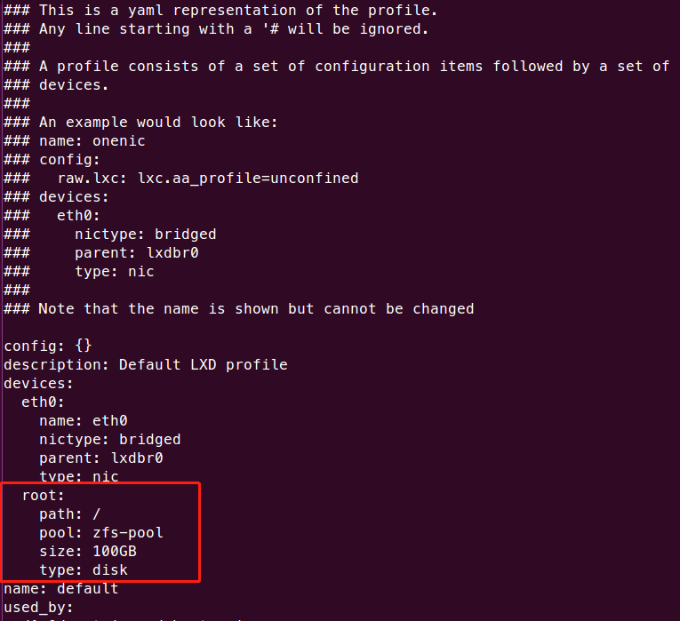

Table of Contents
参考链接
实验室GPU服务器的LXD虚拟化（本文内容主要抄袭对象;D）
TODO
LXD容器网络桥接，避免用户必须通过端口转发
anaconda + tensorflow 安装
For 用户
每个用户一台容器，拥有所有权限
基于XRDP + MATE的远程桌面
For 管理员
安装LXD,ZFS
sudo apt install zfsutils-linux lxd
在Vmware + Ubuntu16.04.6上安装后出现
invalid argument for this pool operation,解决办法参考传送门,安装zfs-dmks(sudo apt-get install zfs-dkms)
STEP.1 创建zpool池
# 查看当前硬盘分区 sudo fdisk -l # 为硬盘分区，此处是sda sudo fdisk /dev/sda # 在块设备 /dev/sda1 上创建一个ZFS存储池 sudo lxc storage create zfs-pool zfs source=/dev/sda1
在实际服务器环境测试的时候发现在创建的容器中使用apt-get速度奇慢,zpool挂载在
希捷酷鱼2T/5400RPM,一开始怀疑是配置问题，不过在Vmware + Ubuntu16.04.6按同样配置虚拟出一块硬盘进行挂载测试没有上述问题。最后解决办法参考传送门1 传送门2
方案1：在宿主机上sudo zfs set sync=disabled zfs-pool实测可提升十倍速度不止。
方案2：在容器中echo "force-unsafe-io" > /etc/dpkg/dpkg.cfg.d/force-unsafe-io实测比方案1速度慢一倍左右。
最后采用方案1
sudo zfs set sync=disabled zfs-pool
STEP.2 LXD默认配置初始化
# lxd初始化
sudo lxd init
Would you like to use LXD clustering? (yes/no) [default=no]: Do you want to configure a new storage pool? (yes/no) [default=yes]: no Would you like to connect to a MAAS server? (yes/no) [default=no]: Would you like to create a new local network bridge? (yes/no) [default=yes]: What should the new bridge be called? [default=lxdbr0]: What IPv4 address should be used? (CIDR subnet notation, “auto” or “none”) [default=auto]: What IPv6 address should be used? (CIDR subnet notation, “auto” or “none”) [default=auto]: Would you like LXD to be available over the network? (yes/no) [default=no]: Would you like stale cached images to be updated automatically? (yes/no) [default=yes] Would you like a YAML "lxd init" preseed to be printed? (yes/no) [default=no]:
STEP.3 修改默认配置文件
# 修改默认文件编辑器 sudo update-alternatives --config editor # 添加前面创建的zfs-pool sudo lxc profile edit default

容器的创建
sudo lxc remote add tuna-images https://mirrors.tuna.tsinghua.edu.cn/lxc-images/ --protocol=simplestreams --public sudo lxc launch tuna-images:ubuntu/16.04/amd64 ubuntu-ai sudo lxc config device add ubuntu-ai gpu gpu sudo lxc config device add ubuntu-ai nvidia-uvm unix-char path=/dev/nvidia-uvm sudo lxc exec ubuntu-ai bash
#!/bin/bash /sbin/modprobe nvidia if [ "$?" -eq 0 ]; then # Count the number of NVIDIA controllers found. NVDEVS=`lspci | grep -i NVIDIA` N3D=`echo "$NVDEVS" | grep "3D controller" | wc -l` NVGA=`echo "$NVDEVS" | grep "VGA compatible controller" | wc -l` N=`expr $N3D + $NVGA - 1` for i in `seq 0 $N`; do mknod -m 666 /dev/nvidia$i c 195 $i done mknod -m 666 /dev/nvidiactl c 195 255 else exit 1 fi /sbin/modprobe nvidia-uvm if [ "$?" -eq 0 ]; then # Find out the major device number used by the nvidia-uvm driver D=`grep nvidia-uvm /proc/devices | awk '{print $1}'` mknod -m 666 /dev/nvidia-uvm c $D 0 else exit 1 fi
容器基本配置
STEP.1 基础软件及显卡驱动
sudo vim /etc/apt/sources.list deb http://mirrors.163.com/ubuntu/ bionic main restricted universe multiverse deb-src http://mirrors.163.com/ubuntu/ bionic main restricted universe multiverse deb http://mirrors.163.com/ubuntu/ bionic-security main restricted universe multiverse deb-src http://mirrors.163.com/ubuntu/ bionic-security main restricted universe multiverse deb http://mirrors.163.com/ubuntu/ bionic-updates main restricted universe multiverse deb-src http://mirrors.163.com/ubuntu/ bionic-updates main restricted universe multiverse deb http://mirrors.163.com/ubuntu/ bionic-proposed main restricted universe multiverse deb-src http://mirrors.163.com/ubuntu/ bionic-proposed main restricted universe multiverse deb http://mirrors.163.com/ubuntu/ bionic-backports main restricted universe multiverse deb-src http://mirrors.163.com/ubuntu/ bionic-backports main restricted universe multiverse sudo apt-get update sudo apt install make cmake openssh-server gcc g++ build-essential ssh sudo lxc file push /home/ubuntu/libcudnn7-dev_7.5.1.10-1+cuda10.1_amd64.deb ubuntu-ai/home/ubuntu/ sudo lxc file push /home/ubuntu/libcudnn7-doc_7.5.1.10-1+cuda10.1_amd64.deb ubuntu-ai/home/ubuntu/ sudo lxc file push /home/ubuntu/libcudnn7_7.5.1.10-1+cuda10.1_amd64.deb ubuntu-ai/home/ubuntu/ sudo lxc file push /home/ubuntu/cuda_10.1.168_418.67_linux.run ubuntu-ai/home/ubuntu/ sudo lxc file push /home/ubuntu/NVIDIA-Linux-x86_64-440.31.run ubuntu-ai/home/ubuntu/ #容器显卡驱动以及cuda以及cudnn安装 sudo sh ./NVIDIA-Linux-X86_64-[YOURVERSION].run --no-kernel-module sudo sh cuda_10.1.168_418.67_linux.run export PATH=/usr/local/cuda-10.1/bin${PATH:+:${PATH}} export LD_LIBRARY_PATH=/usr/local/cuda-10.1/lib64${LD_LIBRARY_PATH:+:${LD_LIBRARY_PATH}} sudo dpkg -i libcudnn7_7.4.2.24-1+cuda10.0_amd64.deb sudo dpkg -i libcudnn7-dev_7.4.2.24-1+cuda10.0_amd64.deb sudo dpkg -i libcudnn7-doc_7.4.2.24-1+cuda10.0_amd64.deb
STEP.2 远程桌面
sudo apt-get install mate-core mate-desktop-environment mate-notification-daemon
sudo apt-get install tightvncserver
sudo apt-get install xrdp
echo mate-session >~/.xsession
STEP.3 宿主机到容器端口转发
# xrdp转发 sudo iptables -t nat -A PREROUTING -d 宿主机ip -p tcp --dport 60611 -j DNAT --to-destination 容器ip:3389 # ssh转发 sudo iptables -t nat -A PREROUTING -d 宿主机ip -p tcp --dport 60601 -j DNAT --to-destination 容器ip:22
容器管理
# 列出规则 sudo iptables -t nat -L PREROUTING --line-number # 删除规则 sudo iptables -t nat -D PREROUTING 1 # 保存和加载规则 sudo apt-get install iptables-persistent sudo netfilter-persistent save sudo netfilter-persistent reload
容器模板
# 停止容器 sudo lxc stop ubuntu-ai # 保存为镜像 sudo lxc publish test --alias ubuntu-template-base --public # 列出当前已有的镜像 sudo lxc image list # 从已保存的镜像创建新容器 sudo lxc launch ubuntu-template-base new_container